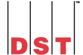

IT Change Specialist
Sept 2015 to Dec 2017
-
Configure applications for quarterly release environments
-
Manage end to end release/change processes for all applications
-
Debug and provide solutions to configuration related issues in
applications.
-
Guide team members on best practices and following process.
-
Chair Change Review/CAB meetings for weekly releases into test and
production
-
Coordinate with vendors for code delivery and support
-
Coordinate with testers, developers and release management teams for
quarterly, monthly and adhoc releases
-
Coordinate and manage new project releases into different environments
-
Responsible for preparing and reviewing consolidated release notes
-
Providing out of office hours including weekend support for all
production implementations as per release schedule
-
Involved in upgrade of applications with third party vendors/suppliers
Own initiatives
-
Create a process to manage and track deployed code
-
Proactively identify issues before deployment